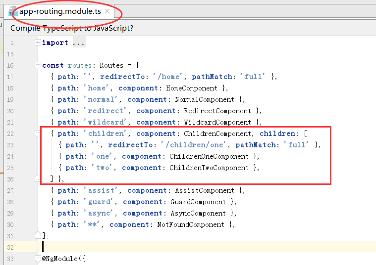
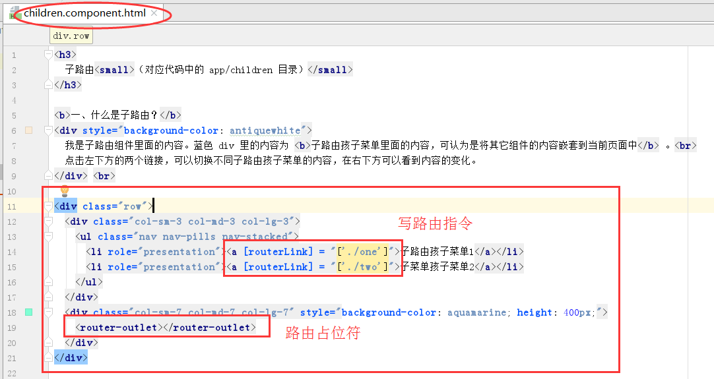

子路由（对应代码中的 app/children 目录）
一、什么是子路由？
我是子路由组件里面的内容。蓝色 div 里的内容为 子路由孩子菜单里面的内容，可认为是将其它组件的内容嵌套到当前页面中 。
点击左下方的两个链接，可以切换不同子路由孩子菜单的内容，在右下方可以看到内容的变化。
二、使用方法：
1. 修改路由表

2. 写路由指令和占位符

三、注意事项：
父路由中的 path 属性是绝对路径，子路由的 path 属性是相对路径，所以子路由 [routerLink] = "['./one']" 中为 './one' 而不是 'one'。